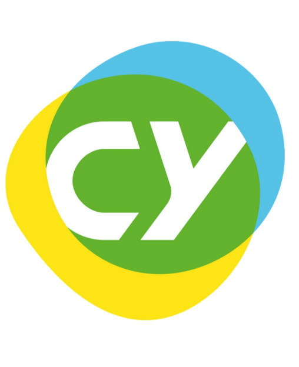

Home | Papers and talks | About | Version française
Renaud Raquépas

Since 2021, I am a postdoctoral researcher at CY Cergy Paris Université (Laboratoire AGM), working with Professor Armen Shirikyan. I completed my PhD in late 2020 at Université Grenoble Alpes (Institut Fourier) and McGill University (Department of mathematics and statistics), under the joint supervision of Professors Alain Joye and Vojkan Jakšić.
I did both my BSc and my MSc at McGill University, in Montréal, over a period of approximately 5 years. It is during that period that I started working with Vojkan Jakšić, but also with other visting professors and postdocs at McGill University. I also had the opportunity to meet and visit colleagues in different parts of France.
I study mathematical physics, with emphasis on time-dependent aspects of statistical mechanics and entropy production, in both quantum and classical systems. Relevant mathematical tools to study such problems include operator theory (spectra, resolvents, perturbation theory, one-parameter semigroups), dynamical systems and ergodic theory (mixing, theory of C*-algebras, random dynamical systems), and probability theory (stochastic differential equations, large deviations).
Current position

Postdoctoral Researcher, 2021–
Mathematics (Laboratoire AGM)
CY Cergy Paris Université, Cergy-Pointoise (Île-de-France)
Mentor: Professor Armen Shirikyan
Education
 Doctor of Philsophy (PhD), 2017–2020
Doctor of Philsophy (PhD), 2017–2020
Mathematics
McGill University, Montréal (Québec) and Université Grenoble Alpes, Grenoble (Isère)
Advisors: Professors Vojkan Jakšić and Alain Joye
Thesis: Tools and results in the study of entropy production
 Master of Science (MSc), 2016–2017
Master of Science (MSc), 2016–2017
Mathematics and statistics
McGill University, Montréal (Québec)
Advisor: Professor Vojkan Jakšić
Thesis: Heat full statistics and regularity of perturbations in quantum statistical mechanics
Bachelor of Science (BSc), 2012–2015
Joint honours in mathematics and physics
McGill University, Montréal (Québec)
Miscellaneous facts
- The IPA phonetic transcription of my name would probably be [ʁəno ʁakepɑ].
- I was born in the 90's in the Province of Québec.
- My first language is French, but I am also fluent in English and I have teaching experience in both languages.
- The font used on this website is 'Raleway'.